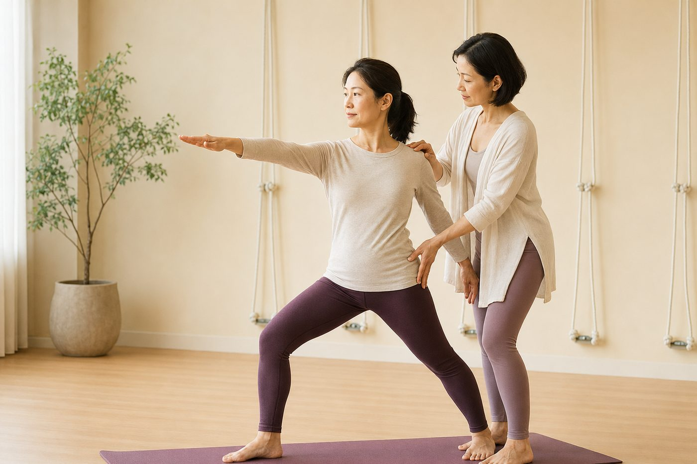

為什麼「做到位」比「做得深」更重要

在教室裡，最容易讓人偷偷比較的，就是「誰彎得比較下去」。前彎能不能摸到地、後彎能折多深、劈腿能開多開——好像角度越大，就越厲害。但如果你看過有人「摸得到地卻一臉痛苦」，也看過有人「只彎一半卻穩得像一座橋」，你大概已經隱約感覺到：深，不一定等於對。
「深」從來不是目標，是做對之後的結果
先講一個容易被搞反的順序：很多人把「角度大」當成目標，逼自己往那個方向硬去；但在動作品質裡，深度其實是「排列對了、組織也準備好了」之後，自然出現的結果，不是你該直接瞄準的東西。
當你把「摸到地」當成唯一目標，身體會很聰明地幫你「達成」——它會從最省力、最容易讓步的地方借角度。問題是，那個最容易讓步的地方，通常不是你以為在伸展的地方。你以為在拉腿後、在開髖，其實常常是腰椎在替你屈曲、關節在替你讓步。看起來很深，練到的卻是另一回事。
深度是「做對」的副產品，不是你要瞄準的靶心。一味追角度，身體會從最不該讓步的地方偷偷補給你。
同樣是前彎，兩個身體其實在做完全不同的事
把兩個人放在一起看最清楚。
A 的手摸到地了，可是他的背是拱起來的——脊椎在腰椎那一段大幅屈曲，骨盆卻卡著沒動。他的「深」，是靠腰椎一節一節彎出來的，膕旁肌（大腿後側）幾乎沒被拉長，反而是下背的韌帶和椎間盤在默默承受被拉扯的壓力。
B 只彎到一半，看起來遜多了。但他是從髖關節摺下去的——坐骨往後、往上推，脊椎維持一條線，讓上半身貼近大腿的動作交給髖去帶。這時候膕旁肌才是真的在延長，腰椎穩穩的、幾乎不受力。這就是先摺髖、不是先彎腰的差別。
原來如此的地方在這裡：摸到地的那個人，其實沒有在伸展他以為在伸展的肌肉；而看起來只做一半的人，才真正練到了東西，而且安全。深，騙得了眼睛，騙不了身體。
「深但錯」為什麼會把人練傷
關鍵字是「代償」。當排列跑掉，負荷不會消失，它只是換一個地方承受——而那個地方，往往是最不該扛的關節或軟組織。常見的幾種：
- 前彎拱背：該由髖帶的角度跑到腰椎，變成椎間盤和下背韌帶在受力。
- 後彎折腰：胸椎沒有伸展開，全靠腰椎往後擠，關節面互相擠壓——這也是為什麼後彎會下背痛，問題常在臀大肌沒出力。
- 開髖硬掰：髖還沒鬆，就硬把腿掰開，被拉扯的變成膝關節內側和大腿的內收肌。
- 站姿、蹲姿膝蓋往內夾：地基歪了，扭力全積在膝關節上。
身體很會「作弊」，它會偷偷從隔壁的關節借範圍給你，讓你以為進步了。但借來的角度是要還的——通常是用痠、緊、甚至受傷來還。這也是為什麼很多人越拉越痛、越練越卡，因為練的一直是代償，不是目標肌群。
那「做到位」到底在練什麼？
兩件事：排列，和發力。
排列（alignment）是讓關節疊在對的位置上，讓力量順著骨架走，而不是壓在軟組織上。發力（engagement）則是讓「該工作的肌肉」真的上工——腹橫肌和多裂肌把脊椎穩住、臀大肌在後彎時撐住骨盆、下斜方肌和菱形肌在開胸時把肩胛往後下收，而不是聳著肩硬撐。
當這兩件事到位，哪怕你的範圍只有別人的一半，對你今天的身體來說，那就是「滿的」。品質決定了這個動作有沒有效、安不安全；幅度只是外觀。這也正是壁繩特別好用的地方：繩子給你支撐和借力，你可以在腰椎不塌、髖能好好摺的前提下慢慢往下，讓身體在「對的排列」裡體會發力，而不是靠蠻力硬凹。想更了解它，可以看認識壁繩瑜伽。
與其自己猜哪裡在代償，不如先看清楚身體現在怎麼排列
AI 體態檢測在教室現場做，用影像幫你看出圓肩、骨盆前傾、左右不對稱，知道你容易在哪裡偷角度，練習時才知道該修哪裡。
預約首次 NT$199 AI 體態檢測今天可以先記住的一件事
下次練習，把注意力從「我彎到哪」換成「我這個角度是從哪裡來的」。前彎先確認背是不是直的、有沒有從髖摺下去；後彎先問臀部有沒有出力。寧可少個十公分，守住排列和發力，也不要為了摸到地，把腰椎和膝蓋賠進去。這不是要你永遠停在淺的地方——而是先把地基蓋對，深度會在身體準備好的時候，自己長出來。循序來就好，本來就不用一次到位。
本頁為體態與姿勢的一般衛教與練習分享，非醫療診斷或治療。若有疼痛、舊傷或特殊病史，請先諮詢合格醫療專業人員。